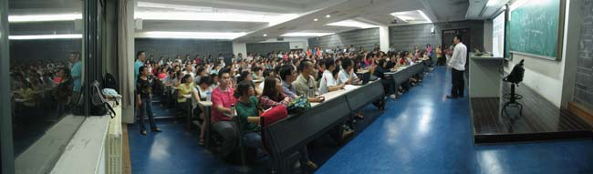
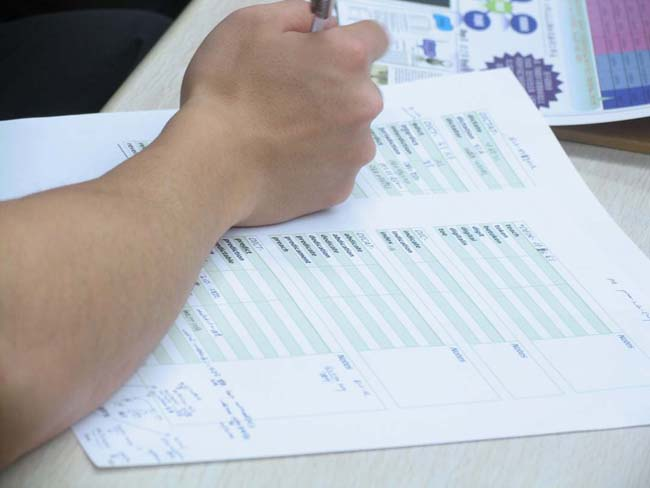
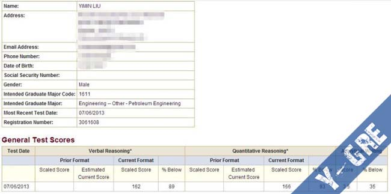
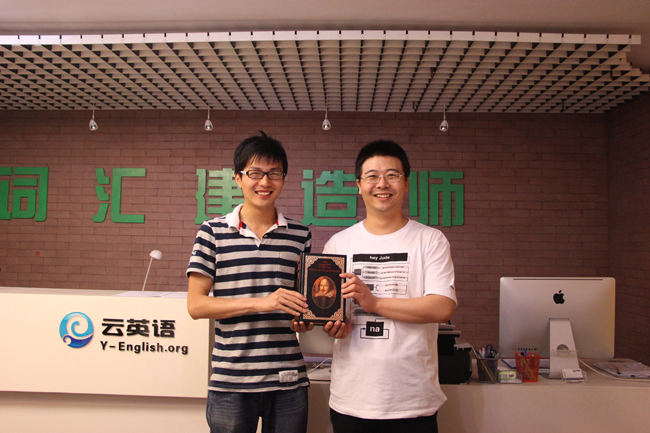
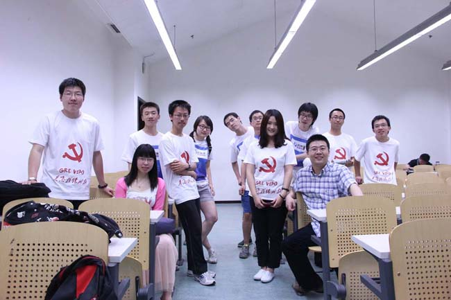

云英语
云英语：因学术而改变

7月6号考的GRE，如果仅是Verbal162并不足以拿出来作为经验贴来分享，不过我的备考经历确实还是和大部分一起杀G的童鞋不一样的，所以将自己的经历写出来，提供一种新的思路，新的选择，供各位看官斟酌。
《红宝书》和《要你命3000》我是完全没有背过的，实际上过了四级之后我就再也没有过捧着一本单词书或是对着一个背单词软件死背单词的经历了。高中的时候是背过四级单词的，当时就觉得死背很无聊便试着更多的去记例句而不是单单记下单词。不过背完四级的一两千来个单词已经觉得够呛了，想着GRE要求至少一万以上的词汇量就感觉不会再爱了。
转机在于大二上的时候在北大听了一场讲座，第一次得知了词源学Etymology这门学问；知道英语单词不是简单的字母的拼凑，而是和中文一样是由有含义的“偏旁部首”组成的；知道了语言的发展演变过程中发音变化是普遍存在的，每个国家和地区的人有自己的发音习惯，于是明白了印度人为什么会有好玩的口音，也原谅了自己作为湖南人说不好普通话；也知道了欧洲大部分语言是来自同一个大家庭，根据格林法则、发音的相似性能大概猜出几个法语单词，德语单词在英语中的对应词；认识了25岁精通10门语言的Diego，而且他从没有背过10本“红宝书”；知道了oxygen, sophomore这两个单词背后是有非常有趣的故事……
也见识到了一位能把单词课讲得笑声不断的李浩老师，于是怀着好奇心和被激起的对语言学的兴趣，报名了云英语的VB（词汇建造师）班。当时其实并没有决定是不是要考GRE，报名的时候还是对GRE的词汇量要求有着莫大的恐惧感，但是至少我勇敢地去尝试一条新的路，觉得即使不是更有效率即使没有成功，至少如果课堂能像讲座那样精彩，时间花在这上面不会无聊。
大二上每个周末都去听课，事实证明课堂是很有意思的。从课堂本体来讲的话，内容是很丰富而且有趣的，比起一般的英语课更加具有学术和科普价值。导论部分讲到英语的起源，原始印欧语众子孙中的一支日耳曼语随着野蛮日耳曼人的征服传到不列颠并取代当地语言成为最初的英语，诺曼征服将法语带入了英文，早期基督教和文艺复兴后拉丁语希腊语大量传入英语……理工男学到这样的历史会感觉很有新鲜感以及成就感；讲到语音学，更本质地理解到清浊的区别，什么叫塞音擦音，唇音齿音唇齿音，发音变化的规律，为什么希腊来源的单词这么多ph开头的，为什么penta-在英语里面对应five；讲到前缀，听到了准确全面的前缀含义，pre, pro, per, re, ex, anti, ante, hyper, hypo…… 主体lesson部分从比较大的词根讲起，第一词根是ac-（尖，sharp），含有这个小东西的单词多达43个，看着几十个单词都share同一个意思的感觉除了很神奇就是真的有助于记忆，词与词之间有了联系便好记多了。在课堂主体之外，笑点是很多的，李老师是学医出生的，没事就会给我们普及一点医学知识，知道了有一种非常恶心的寄生虫叫做绦虫，知道了好玩的解决constipation的终究方法和人类某些奇怪的交配方式的生理可行性。加上李老师非常丰富和神奇的小时候的经历，没事抖搂点出来逗大家乐乐，课堂总是比较欢乐的。
闲扯之中也得提供一些和GRE相关的实实在在的数据，VB整个课程在两本教材中的总词汇量约为6350左右，这是我刚刚按页数和每页单词数估算出来的。加上课堂上延伸的，再去掉里面一些超过GRE要求的学科专业词汇，以及和四级相重复的简单词，新增词汇量估计在5000左右(其实我学得不踏实，肯定做不到100%全记住的，但是抛去个人不勤奋和记性差的因素，给出一个理想的目标)。我估计我学完之后的词汇量约为：学之前的四级接近六级的水平，按4000词汇量算，加上这新增的5000，等于9000，还不到一万。
显然这个词汇量水平是不够GRE要求的。
决定要考GRE是在大三上，当时才有了出国的念头，不管最后是不是真的要出国，先考了再说，多给自己一条路。于是报名了云英语的另一个班，Y-GRE。
这个班所倡导的理念里面很值得说的一点，也结合了我自己的理解：GRE不仅仅是一门语言考试而更多的是智商考试，于是Y-GRE班的主体内容是在不断地做模拟题中积累单词同时锻炼理解复杂英文语句的能力，养成图景式阅读的习惯，真正彻底的去理解一道TC题和一篇GRE阅读，而不是追求猜答案的技巧，同时在做题的过程中补充相关的背景知识，在脑海里形成对这个领域一个基本的common sense，缓解理工学生看不懂文学评论和艺术鉴赏类的填空和阅读题的窘境，最重要的是保持深度思考辨析，维持并提高智力活动水平。
Y-GRE班扩展词汇量的方式是以做题过程遇到的单词为出发点，纵向地扩展出所有重要的同源词，横向地扩展出所有重要的同义词，这样形成一个彼此之间有多重联系的单词网络。一来这样的扩充能保证词汇量足够，如果光只记题目中出现的生词的话是很难保证词汇量扩充到足够的大小的；二来这样的联系可以减少记牢一个单词所需要的复现数和时间，根据我的回忆，我平均记住一个单词的复现数是2到3次，2到3次与一般背红宝所需的5次以上复现的差别应该不是个体差异能解释的，更何况我确信我是一个记忆力低于人类平均水平的人。

Y-GRE班我上了一个学期，按计划是应该每周末两天每天10个小时左右的时间，但是实际上因为睡懒觉的习惯以及大三上那个学期经常会打打篮球赛，所以出勤率估计在70%左右吧。周中的时间因为专业课比较忙几乎是没有投入到GRE备考中来的。
大三下去美国交流了一个学期，由于课业很轻松日子过得很悠闲，人也懒散了起来；总共四个月的交流就只有一个月每天花个2小时左右在复习GRE，方式就是做题；Y-GRE提供10本practice set，总共的题目量是3000道左右，考试之前应该是刷掉了全部的TC和SE题以及50%的阅读吧，几乎没有花时间准备作文。
回国之后用了一个月的时间集中复习，把剩下的题刷刷完，单词复习复习；平均下来每天6个小时左右吧，不算多，因为还是会看看DOTA，TBBT，以及同时在参加SD的比赛，和为期一个星期的金工实习。
考试的过程中还是会有不认识的词，但是第一个session做的比较好，题基本都读懂了，所以第二个session进入hard模式了，虽然做第二session的时候很懵有点慌，最后成绩也还不错，虽然比黄笛大神的170真是差太远了，不过对于理工科的申请已经是一个可以加分的成绩了。
我觉得单从效率上来讲的话，我并不清楚常规的备考方法需要多久的备考时间，有data的朋友可以计算一下，但是备考时间本身就是一个很不准备的说法，从什么时候算开始备考呢？每个人的英语底子都不一样，与平时的阅读量和初高中的教育密切相关，加上每个人记忆能力，理解能力，对语言的感悟能力都不一样，不会有一个很普适的标准能适应每一个人。当然如果有很多data可以算出平均的朋友或机构可以计算一下，更有意义。
不过人生不能只看效率吧，GRE也不是学习英语的唯一目的，在这个过程中会有更多的值得去评价的东西。个人体验下来，这样一条新的路，首先是比死背单词是要丰富有趣无数倍的，VB和Y-GRE听课的时候不会觉得一些乏味枯燥，刷题的过程也比背单词的过程要更有挑战和趣味，做出并理解一道题的成就感也会比记住数个单词来的更高一些；其次，这条路是一条更接近与英文之美的路，英语的词源中蕴含着很多的故事，在学单词查词源的过程中有大把的机会接触到希腊神话，接触到与这个英文单词起源相关的历史文化艺术，也有自然科学的知识在里面；再者，这条路对更多语言的学习是起到奠基作用的，我学过很短时间的法语，在学VB过程中学会如何查词源之后几乎每个法语词都能找到英文中的对应词，记忆起来非常方便。还有比如说VB课堂李老师大力提倡的多查查维基百科，在现在的专业学习上帮助就挺大的，另外理工科很多学科术语都是词根词缀的简单拼凑，结合上下文很容易看出来意思来，读专业文献会轻松不少…… 总而言之，收获颇丰！
最后引用李老师的一句话来结尾吧，没啥逻辑，共勉励志：“热爱知识，追寻智慧，乐于并勇于利用知识与智慧创造财富。”

原文：http://blog.renren.com/share/254724915/16317021338
版权所有 2011-2015 云英语 Y-English All Rights Reserved
地址：北京市海淀区五道口华清嘉园商务会馆802
电话：400-876-3898 010-82863898 82863899 传真：010-82863897